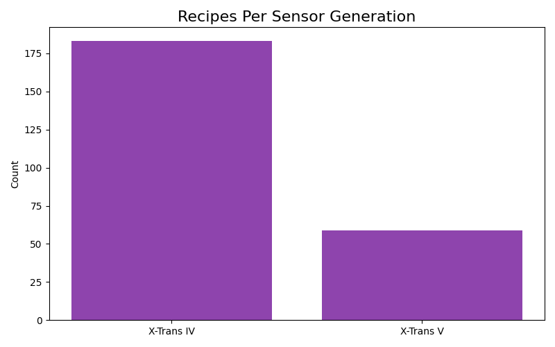

I analyzed over 240 film simulation recipes with the help of Antigravity AI to uncover the statistical consensus of the Fujifilm community. This isn't just data; it's a blueprint for the "Perfect Fuji Look".
Recommendation The "Nishti Recipe"
Through statistical averaging of every recipe in my database, I found the "Golden Mean"—a set of settings that represents the collective wisdom of the global community.
Why this works: It balances modern sharpness with vintage character. It adopts the documentary feel of Classic Chrome, protecting highlights with DR400, and adding a universally pleasing "Golden Hour" warmth.
| Setting | Value | Technical Justification |
|---|---|---|
| Film Simulation | Classic Chrome | The gold standard for documentary photography. "Real" yet cinematic. |
| Dynamic Range | DR400 | Preserves 2 stops of extra highlight detail. Essential for "analog" roll-off. |
| Highlights | +0.5 | Keeps the image punchy without clipping whites. |
| Shadows | +1.0 | Adds necessary contrast to avoid the flat "HDR" look. |
| Color | +1.0 | Compensates for Classic Chrome's natural desaturation. |
| Noise Reduction | -4 | Critical. Prevents smearing. Ensures organic, grain-like noise structure. |
| Sharpening | -1 | Digital sharpening looks artificial. -1 allows lens character to shine. |
| Clarity | -2 | Acts as a "Mist Filter". Softens micro-contrast. ⚠️ CAUTION: Adds ~1s processing delay per shot. |
| Grain Effect | Strong, Small | Textural grounding to break up digital gradients. |
| White Balance | Auto, 0R, -2B | The "Golden Warmth". Creates a permanent afternoon light feel. |
If you need to shoot fast bursts, set Clarity to 0. You will lose the "dreamy" softness, but the camera will save instantly without the 1-second "Storing" pause.
Want the "dreamy" look without the lag? Buy a PolarPro Mist Filter (e.g., Shortstache Everyday Filter).
- 0s Delay: Provides the "Clarity" bloom effect optically, so your camera stays fast.
- UV Protection: Cuts haze and removes reflections.
- Best of both worlds: You get the "film look" + "burst mode" speed.
1. The Favorite Look
Classic Chrome (14 recipes) and Classic Negative (13 recipes) are the undisputed kings.
Why these two?
- Classic Chrome (The Journalist): It mimics Kodachrome. By separating color intensity from luminance, it creates a mature, "National Geographic" documentary look.
- Classic Negative (The Artist): It mimics Superia 200. It introduces hard contrast and cyan shifts in shadows, perfect for usage in gritty street photography.
2. The Psychology of Color
The data shows a huge community preference for the "Golden Hour" look.
How to read this chart:
- ● The Orange Zone (Top-Left): This is "Vintage". Most recipes sit here because shifting Yellow/Red enhances the nostalgic feel.
- ● The Blue Zone (Bottom-Right): This is "Modern/Clinical". Very few people want this look.
- The Center: This is "Accurate". Almost nobody wants accuracy; they want mood.

3. Protecting Highlights
DR400 is dominant because it fundamentally changes how the sensor operates.
Technical Analysis
- Highlight Roll-off: DR400 forces a 2-stop underexposure of the RAW file.
- Film Emulation: Film handles overexposure gracefully; digital clips instantly. DR400 is the only way to mimic that behavior.
4. Texture vs. Noise
Strong Grain is the overwhelming favorite.
Why add noise on purpose?
- Texture: Modern 40MP sensors are "too clean". They look distinctively digital. Adding grain breaks up the perfect gradients, making the image feel organic.
- Perceived Sharpness: Paradoxically, grain makes an image look sharp. Our brains interpret the random high-frequency noise as "detail", distinct from the mushy smearing of noise reduction.
5. The "Mist Filter" Effect
Users accept the slowdown of Clarity to achieve a specific look.
What is Clarity?
- Negative Clarity = Dreamy: It bleeds brightness into shadows, creating a "bloom" effect (like a dirty lens or ProMist filter). This is the key to the "Cinematic" look.
- Positive Clarity = HDR: It sharpens edges (like the "structure" slider on Instagram). Almost nobody uses this because it looks artificial/gritty.

7. Color Chrome vs. Saturation
Do users compensate for the darkening effect of "Color Chrome" by boosting saturation?
Understanding the connection
- Color Chrome Effect: It creates deeper spacing in highly saturated colors (reds/greens). It's like a "polarizer" for color.
- The Trend: Users running "Strong" Chrome FX often boost Color to +2 or +3. They want rich color, not neon color. Chrome FX keeps it printable.
8. The "Noise Floor" (ISO)
Why do so many recipes cap Auto-ISO at 6400?
Digital Grain vs. Analog Grain
- ISO 6400: On older sensors, this was unusable. On the X100V's BSI sensor, ISO 6400 noise looks remarkably monochromatic (like film grain) rather than colorful (like digital noise).
- Freedom: Setting a high limit allows you to shoot at f/8 (for sharp street shots) even at night.
9. Contrast Curves (Light vs. Dark)
How does the community handle contrast? The data shows a preference for the "S-Curve".
Technical Analysis
- ● Soft / Cinematic (Bottom-Left): Most users push Shadows to be slightly soft (-1) while keeping Highlights neutral. This mimics the low-contrast look of motion picture film.
- ● High Contrast (Top-Right): Used sparingly for "Punchy" street photography (like Ricoh GR simulations).
10. The Fuji "DNA" (Radar Chart)
Visualizing the average aesthetic footprint of the X100V community.
The Shape of Color
- The Bias: Notice how the shape pulls heavily towards "Softness" (Negative Sharpening/NR) and "Warmth".
- The Anti-Sony: If you mapped a Sony/Canon profile here, it would be a perfect circle in the center. Fuji users actively distort reality for artistic effect.

The Hardware (X-Trans IV vs V)
Most recipes are built for X-Trans IV (X100V), but X-Trans V (X100VI) handles them identically.
